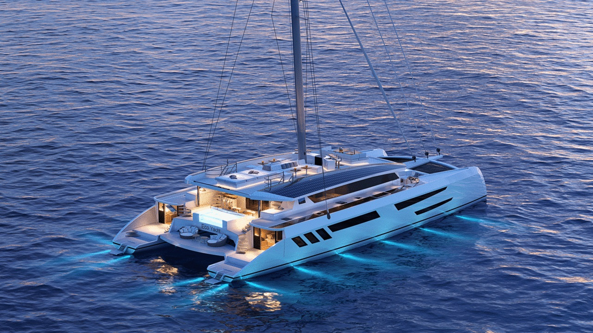
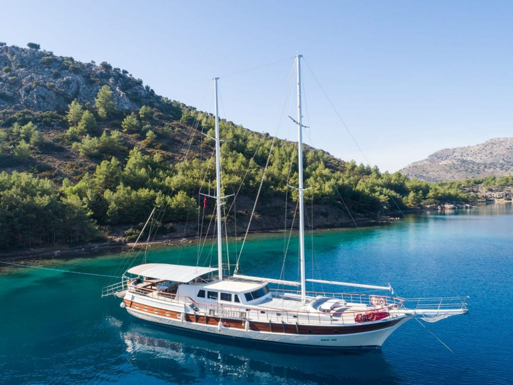

Aluguel de iates
A motor

Ideal para quem busca velocidade, conforto e praticidade. Perfeito para passeios rápidos ou longas navegações, oferecendo estabilidade e autonomia.
A vela

Perfeito para quem deseja viver uma experiência autêntica e tranquila, navegando ao sabor do vento com conexão total com a natureza.
Catamarã
Amplo, estável e extremamente confortável. Ideal para grupos e famílias, oferece grandes espaços internos e externos para lazer e relaxamento.
De luxo
Experiência premium em alto mar. Iates sofisticados, com acabamentos de alto padrão, serviços exclusivos e total conforto para viagens inesquecíveis.
Gulet
Embarcação tradicional com charme rústico e elegância. Combina o conforto moderno com a beleza da navegação clássica, ideal para viagens relaxantes.
Cruiser

Perfeito para quem busca aventura e conforto. Oferece excelente desempenho, segurança e comodidades para explorar diferentes destinos com estilo.